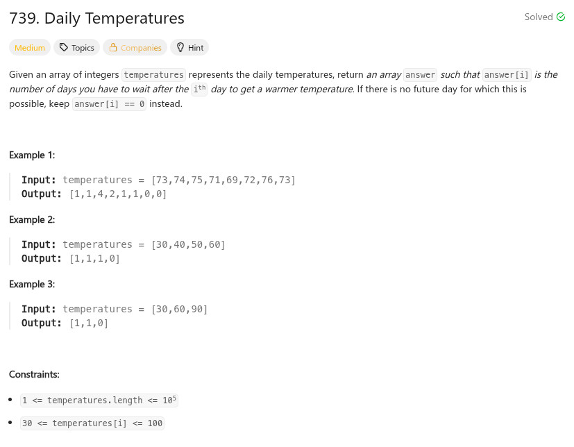

參考資訊：
https://algo.monster/liteproblems/739
https://stackoverflow.com/questions/72959877/leetcode-739-daily-temperatures-when-to-use-a-monotic-stack
題目：

/**
* Note: The returned array must be malloced, assume caller calls free().
*/
int* dailyTemperatures(int* temperatures, int temperaturesSize, int* returnSize)
{
int i = 0;
int pos = 0;
int *r = calloc(temperaturesSize, sizeof(int));
int *s = calloc(temperaturesSize, sizeof(int));
for (i = 0; i < temperaturesSize; i++) {
while (pos && (temperatures[i] > temperatures[s[pos - 1]])) {
int idx = s[--pos];
r[idx] = i - idx;
}
s[pos++] = i;
}
(*returnSize) = temperaturesSize;
return r;
}